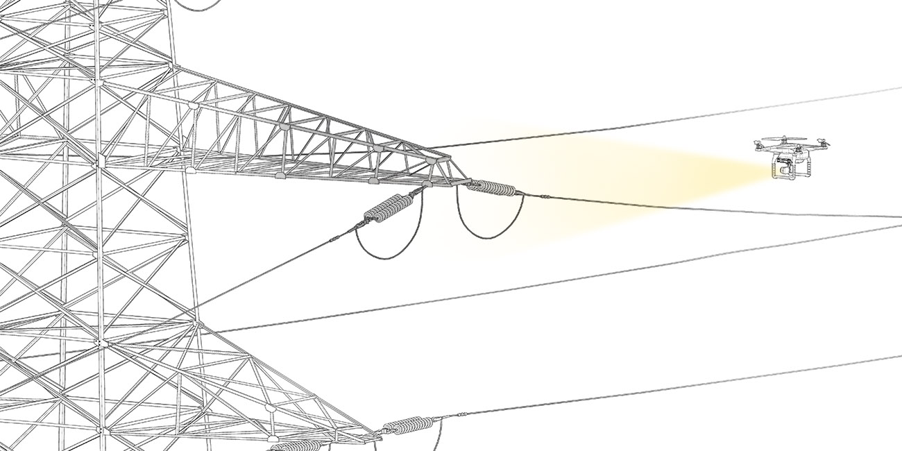

<!DOCTYPE html>
<html lang="en">
  <head>
    <meta name="description">
    <meta name="keywords" content="responsive, grid, system, web design">
    <meta name="author" content="responsive, grid, system, web design">
    <meta http-equiv="cleartype" content="on">
    <meta name="HandheldFriendly" content="True">
    <meta name="MobileOptimized" content="320">
    <meta name="viewport" content="width=device-width, initial-scale=1.0">
    <link rel="stylesheet" href="/assets/css/html5reset.css" media="all">
    <link rel="stylesheet" href="/assets/css/col.css" media="all">
    <link rel="stylesheet" href="/assets/css/2cols.css" media="all">
    <link rel="stylesheet" href="/assets/css/3cols.css" media="all">
    <link rel="stylesheet" href="/assets/css/4cols.css" media="all">
    <link rel="stylesheet" href="/assets/css/5cols.css" media="all">
    <link rel="stylesheet" href="/assets/css/6cols.css" media="all">
    <link rel="stylesheet" href="/assets/css/7cols.css" media="all">
    <link rel="stylesheet" href="/assets/css/8cols.css" media="all">
    <link rel="stylesheet" href="/assets/css/9cols.css" media="all">
    <link rel="stylesheet" href="/assets/css/10cols.css" media="all">
    <link rel="stylesheet" href="/assets/css/11cols.css" media="all">
    <link rel="stylesheet" href="/assets/css/12cols.css" media="all">
    <link rel="stylesheet" href="/assets/css/style.css">
    <link rel="stylesheet" href="/assets/css/animate.css">
    <link rel="stylesheet" type="text/css" href="/assets/css/component.css">
    <link rel="stylesheet" type="text/css" href="/assets/css/glslEditor.css">
    <link rel="stylesheet" type="text/css" href="/assets/css/codeCanvas.css">
    <link rel="stylesheet" type="text/css" href="https://maxcdn.bootstrapcdn.com/font-awesome/4.4.0/css/font-awesome.min.css">
    <title>Jaskirat Portfolio   </title><script src="/assets/js/modernizr.custom.js"></script>
  </head>
</html>
<body>
  <div id="st-container" class="st-container">
    <div class="st-pusher">
      <nav id="menu-7" class="st-menu st-effect-7">
        <h2 class="icon icon-lab logo"><span>JASKIRAT R </span></h2>
<ul class="menu">
  <li><a href="/" class="hvr-underline-from-center">Home</a></li>
  <li><a href="/projects/" class="hvr-underline-from-center">Projects</a></li>
  <li><a href="/about/" class="hvr-underline-from-center">About</a></li>
  <li><a href="http://jaskiratr.tumblr.com" class="hvr-underline-from-center">Blog </a></li>
</ul>
      </nav>
      <div class="st-content">
        <div class="main clearfix">
          <div id="st-trigger-effects" class="column"><a id="nav-toggle" href="#" data-effect="st-effect-7"><span></span></a></div>
        </div>
        <div class="st-content-inner">
          <div class="width_80">
            <div class="section group header">
              <div class="col span_1_of_3 logo"><a href="http://jaskirat.me"><span>JASKIRAT R </span></a></div>
              <div class="col span_3_of_2 topNav">
<ul class="menu">
  <li><a href="/" class="hvr-underline-from-center">Home</a></li>
  <li><a href="/projects/" class="hvr-underline-from-center">Projects</a></li>
  <li><a href="/about/" class="hvr-underline-from-center">About</a></li>
  <li><a href="http://jaskiratr.tumblr.com" class="hvr-underline-from-center">Blog </a></li>
</ul>
              </div>
            </div>
            <div class="section group subheader">
              <h1>Terra</h1><br>
              <h3>
                <p>Photogrammetry for Aerial Surveillance</p>
              </h3><br><p>Project Team:
Jaskirat Randhawa, Grace Jun, Charles Saidel</p>
<p>Terra is a terrain mapping service that uses drones to 3D scan for constructing and inspecting power lines.
Using PowerGrid India as an exemplary client, we are focusing to provide a service for engineers working on the construction &amp; maintenance of transmission power lines.</p>
<p></p>
<p><style>.embed-container { position: relative; padding-bottom: 56.25%; height: 0; overflow: hidden; max-width: 100%; } .embed-container iframe, .embed-container object, .embed-container embed { position: absolute; top: 0; left: 0; width: 100%; height: 100%; }</style><div class='embed-container'><iframe src='https://player.vimeo.com/video/150319900' frameborder='0' webkitAllowFullScreen mozallowfullscreen allowFullScreen></iframe></div></p>
<div class="section group">
<div class="col span_1_of_2">
<br></div>
<div class="col span_1_of_2">
<p>
My responsibilities included data procurement from Power Grid Corporation of India Ltd. I coordinated with the managers in the Asset Management department to formulate the viability of Terra.
The team members cooperatively carried out photogrammetry tests and I worked with various software to obtain the best results.
</p>
<p>
    Currently, 125 miles a day for line data can be collected by using helicopters. The cost of that is 300.00 USD per mile. Hence the daily cost of using helicopters is estimated 37, 500 USD.
</p>
<p>
For a fraction of that cost, drones can be deployed in certain scenarios for local inspection within 5mile radius per flight. It can greatly assist in providing accurate latest data in support of remote sensing technologies.

Drones can inspect :<br>
.Sag detection in conductors<br>
.Conductor and ground clearances<br>
.Visual defects in assets.
</p>
<p>
    The images on the left show the flight Path of the drone for scanned test area. The point cloud reconstruction was done using the Pix4D mapper Software.

</p>
</div>
</div>


<p>Terra can be used for two scenarios:<br>
.To scan a terrain prior to construction of power transmission lines. <br>
.To inspect the existing power transmission lines for fault and defects.</p>
<p>
</p>
<p>Digital Surface model created by the Pix4D software.</p>

            </div>
            <div class="section group footnote">
              <hr>
              <div class="iconSet"><a href="http://www.github.com/jaskiratr" target="_blank"><i class="fa fa-github-square fa-lg"></i></a><a href="http://www.vimeo.com/jaskiratr" target="_blank"><i class="fa fa-vimeo-square fa-lg"></i></a><a href="http://www.jaskiratr.tumblr.com" target="_blank"><i class="fa fa-tumblr-square fa-lg"></i></a><a href="http://www.linkedin.com/in/jaskiratr" target="_blank"><i class="fa fa-linkedin-square fa-lg"></i></a></div>
            </div>
          </div>
        </div>
      </div>
    </div>
  </div>
<script src="/assets/js/jquery.min.js"></script>
<script src="/assets/js/masonry.pkgd.js"></script>
<script src="/assets/js/imagesloaded.pkgd.js"></script>
<script src="/assets/js/index.js"></script>
<script src="/assets/js/classie.js"></script>
<script src="/assets/js/sidebarEffects.js"></script>
<script src="/assets/js/tracking.js"></script>
<script src="/assets/js/glslEditor.js"></script>
<script src="/assets/js/glslEditorFooter.js"></script>
</body>